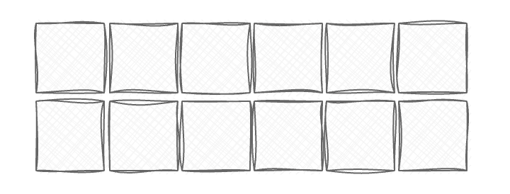
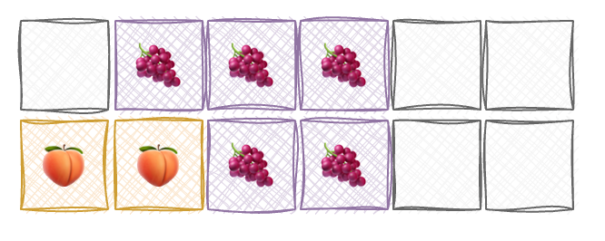
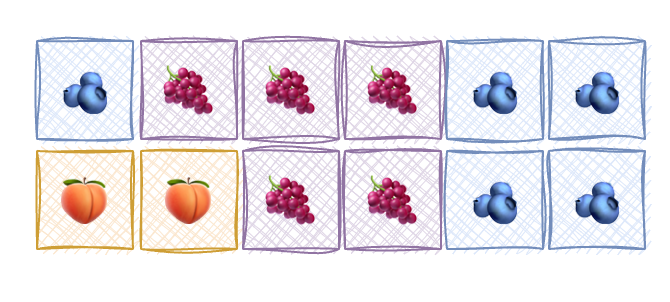
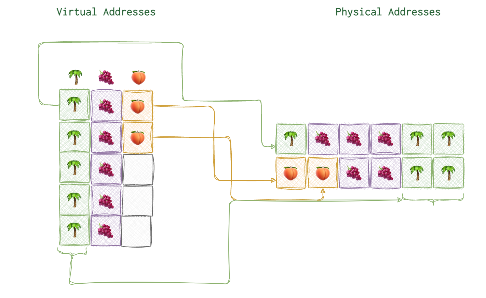
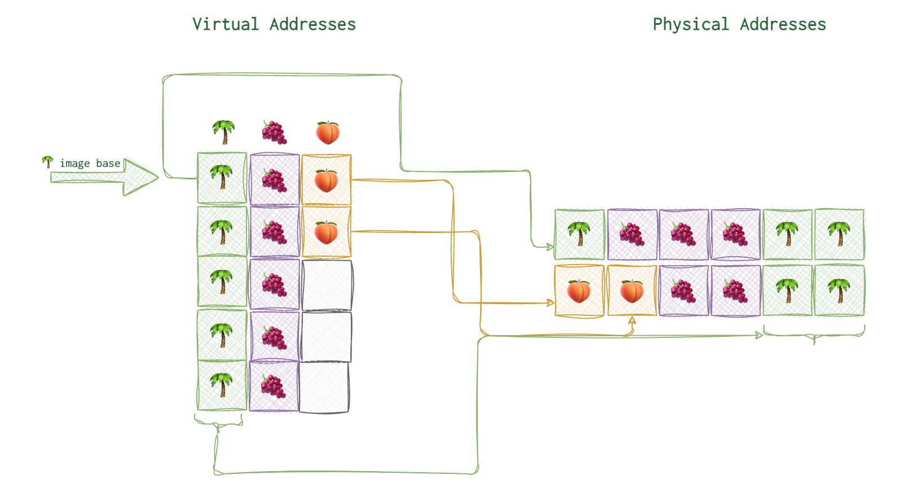
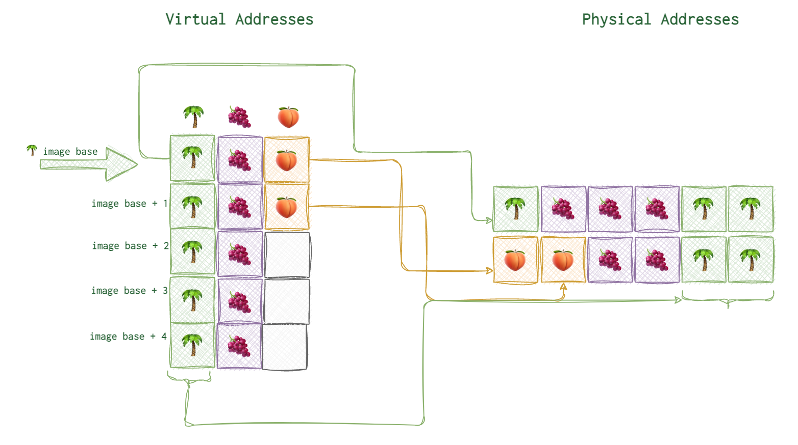

I’ve had a lot of time to dive into certain pecularities of how programs are outlined both in RAM and on disk when working as a malware analyst. One part of my job was to treat infected files. For that purpose I wrote remedy scripts. For them to work I had to have a solid underatanding where to perform the amputation. Since the topic might be a little confusing, I’ve published it here. Originally it was hand-written in my 💎 notebook 📓.
Intro
A program exists in two main instances: on HDD or SSD (or USB drive) when being idle and not being run, and in RAM when being executed. Basically, it has alsmost all the same information but … the keyword is almost. What you see with a disassmebler like radare2 or IDA - is the code with addresses as they reside on the disk. But when you run a debugger, the memory addresses become different. Partly, this is due to the fact, that nowadays to mitigate different lowlevel attacks there is a random memory addressing technique. Whenever the program is run, the absolute addresses differ. Well… since the addresses have to be aligned… the last 3-4 digits of the addresses before and after executing are the same 😜.
To be honest, I only studied it on a Windows OS. I’m not yet quit sure, how that really works with Mach-O or elf files. But I presume, anyway it’s be easier to figure out after a solid undertanding of this notion for Windows OS.
First things first, we need to specify some terms to operate on later.
Virtual Address (VA)
Each process is allocates some address space, so that other processes don’t meddle with its affairs. As we know from the Meltdown vulnerability overview, some address space is shared between processes - kernel space, the most desired part of the realm, so to say.
When the CPU is asked for some new memory allocation, it looks at its assets and provides what’s required. The memory space allocated is not always contigious. Imagine the following memory of 12 blocks.
 It’s free, idle, virgin. Now, the first “customer” 🌴 comes along and asks for one memory block, and he gets one. Another process 🍇 also needs three more blocks. Now, the next three blocks are given to the process. Now the first process 🌴 needs two more blocks now, then 🍑 suddnely another flufy fella comes along and requests two block. Since all was free at the beginning, the CPU doesn’t really have a problem, just giving the contigious blocks of memory. Here is what our fully occupies memory space would look like. Now, imagine that the first process 🌴 goes on holiday and thus its memory blocks are freed by the CPU (doesn’t mean cleaned though, but that a whole other story). Here is our memory now:

Now, imagine another process 🫐 that needs 5 block. CPU has 5 block, but they are not close to each other. So, CPU can give out non-contigious blocks for a change. Now, does it return 5 different addresses or 3 differnt addersses with their sizes? Turns out, neither.

It would be hell to manage memory like this. That’s why CPU has a page table to map actual real physical addresses to virtual addresses it gives out to the processes. So, when the address space is assigned to a process, usually starts at 0x00000000. Of course, in reality it is not all zeros, it could be something like 0x087a4aba under the hood. However, the process doesn’t know it, neither it needs to, really.
In each process thinks it’s the only king 👑 in the kingdom, when in fact none of them are.

Each process is promised 0x00000000 to 0xFFFFFFFF addresses (32-bit systems). The kernel space usually starts at 0x80000000 and ends at 0xFFFFFFFF.
Here is a little extract on the topic from ChatGPT:
- Windows: In 64-bit versions of Windows, user-mode addresses span from 0x00000000
00000000 to 0x00007FFFFFFFFFFF, and kernel-mode addresses span from 0xFFFF080000000000 to 0xFFFFFFFFFFFFFFFF. The exact ranges can vary depending on system configuration, such as the enabled user-mode address space.- macOS: In 64-bit macOS, traditionally the lower 4 GB of address space was allocated to user space, with the rest reserved for the kernel. However, with macOS Catalina and later, Apple introduced a new feature called “Four-Level Page Tables” for their 64-bit ARM architecture (used in Apple Silicon Macs), which changed the division of user and kernel space. Apple hasn’t officially published the new division, but in many cases, the kernel space starts at a much higher address.
A very rough idea of how this looks like for our imaginary memory block of palms and fruits.

Image base
The first virtual address is what they call image base. For example, on the picture below you can see the image base of 🌴 marked with a thick arrow and the arrows connecting the virtual address blocks to their actual physical locations.

On Windows (at least when I was doing reverse engineering), the image base for the PE executables were 0x40000000. Image base is not neccessarily the first address from the allocated address space for this process. Neither it’s always where its code starts. It’s some agreed upon point on that all the relative virtual addresses rely upon (read below).
RVA
RVA stands for relative virtual address. Relative to what? To the image base of this particular process. Because, the addresses can get really long on the modern 64-bit systems, and not always they start from 0x00000000. Anyway, very often instead of using a full address, a process uses it’s shortened versions. Pretty much like Benjamin is called Ben most of the time (I presume).
Image base and relative virtual addresses are very useful terms. DLL’s (libraries extending the processes’s functionality), when loaded into memory can be loaded at different virtual addresses. But all the code, all the functions they remain on the same “distance” from the code start. That’s why when the code uses relative addresses, it will work regardless of where it’s really loaded. Think of it as a variable, an offset from the start.

Import tables (when the code you load has dependencies with other processes, including some dlls) contain RVAs as well.
RAW
When the code (its image, we call it) is on disk, not loaded, it’s basically a file and the addresses for that data is different. When the image is then loaded into RAM, the addresses are different. RAW address are those for when the file is NOT yet loaded and resides only on disk.
Physical Address (PA)
Alignment
OS moves stuff in chunks, and it usually rounds things up. FileAlignment is usually 512 bytes. PageAlignment is usually 1024 bytes (1 page), differs from one CPU to another. So, for a 513 bytes file it would be rounded up to 1024 in disk and in memory - to 1 page (1024). But all these numbers vary from OS and in case of disk memory - file system as well.
File Alignment
Page Alignment
Summary
VA = ImageBase + RVA
RAW = RVA - sectionRVA + FileStartToSectionStartOffset # RVA - sectionRVA gives us the RVA from the section start
RVA = RAW + sectionRVA - RAWsection
To better understand the topic, I highly recommend opening some PE executable on Windows with PEView utility. There you will see IMAGE_SECTION_H. Open, for example, a .text section (the one with all the code). Note virtual size and physical size.
For example, VS = 5027D and PS = 50400.
Now, go to IMAGE_OPTIONAL_HEADER. Section alignment = 1000 and file alignment = 200. VS - section before alignment and PS is what you will see after the alignment for a file on disk.